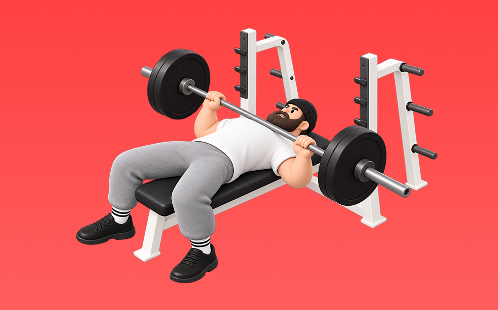

ベンチプレス

ベンチプレスとは、バーベルを使って「押す」動作で胸（大胸筋）、肩前部（三角筋前部）、腕（上腕三頭筋）を鍛える種目です。高重量を扱いやすく、筋力を伸ばしやすいのが特徴で、ベンチに仰向けになり、胸に下ろして押し上げる動作を繰り返します。厚い胸板づくりや上半身の押す力の向上が期待できます。
- 対象部位
- 胸
- 器具
- バーベル
- 記録形式
- 重量・回数
- 別名
- BBベンチ / bench press / ベンチ
YouTube動画
-
【初心者向け】怪我を防ぐ正しいベンチプレスのフォーム解説【筋トレ】
-
【筋トレ】ベンチプレスの正しいフォームを山本義徳先生が実践！
-
【正しいやり方】ベンチプレスを確実に胸に効かせる筋トレ方法
-
ベンチプレス完全解説｜初心者から120kg超えを目指すためのフォーム・補助・伸ばし方
-
【140kg】ベンチプレスを伸ばすオススメの種目〜ウッシーのリアル練習
-
ベンチプレスのフォームを詳しく解説！大胸筋を効果的に鍛えるやり方と胸に効かないNGフォーム3選【脱初心者筋トレ講座】
-
【ベンチプレス】大胸筋に効かせるフォームと重量を上げるフォームは一緒じゃない！本当のフォームを教えます
-
【筋トレ】初心者向け！肩を痛めにくいベンチプレスの始め方
-
【完全版】ベンチプレスの「重量が伸びる」正しいフォーム11手順｜初心者〜中級者向け
-
世界チャンプが教える間違いだらけの筋トレ【ベンチプレス編】
-
【初心者】正しいベンチプレス講座【筋トレ】
-
ベンチプレスのやり方｜正しいフォームを解説
-
【初心者必見】大胸筋を鬼追い込む！！バズーカ岡田が教えるベンチプレスフォームの正しいフォーム、効果激変テクニック
-
バーベルベンチプレスが胸に効くようになる方法
-
【初心者必見】この種目は絶対やれ！初心者でも効かせられるベンチプレス徹底解説
-
【全部大事】ベンチプレスを伸ばす３ポイント！
-
9割の人が知らないベンチプレスの効かせ方
-
【ベンチプレス60kgの壁】初心者が70kgを超えるために必要な3つのポイントとは？
-
【ベンチプレス】筋量が少なくても100kg挙げるための方法
-
ベンチプレスの正しいフォーム完全解説！基本を徹底すればベンチプレスは重量伸びます
-
これを見ればOK！1から始めるベンチプレス！
-
【初級〜上級者まで今すぐできる】本当は教えたくない㊙︎ベンチプレスを初公開！筋肉教祖シリーズ#2
-
【重量アップ or 筋肥大】初心者さんは知らないベンチプレスのフォーム2選
-
ベンチプレス100kg 挙がらない人の4つの共通点
YouTubeショート
-
24Hジムでよく見るベンチプレスこの技術できたら良くなるよ
-
【ベンチプレス】背中に力を伝えるブリッジ強化法 #筋トレ #レッグドライブ
-
正しいダンベルベンチプレス5つのポイント 【筋トレ】
-
マジの初心者にベンチプレスをレクチャー
動作方法
- 安定した姿勢を作り、肩と体幹を固定する
- 狙う部位を意識して、反動を使わずに押す
- 可動域を保ちながら、ゆっくり元に戻す
動作ポイント
- 肩をすくめない
- 手首を寝かせすぎない
- 反動を使いすぎない
ワンポイントアドバイス
- 最初は可動域を優先してフォームを固める
- 肩に違和感がある日は重量を落として調整する
目的別回数設定
目的や体力に応じた一般的な目安です。無理のない範囲で調整してください。
- 筋力アップ
- 1〜5回
- 筋肥大
- 6〜12回
- 持久力アップ
- 13〜20回
YouTube動画について
動画はYouTubeの公開情報をもとに表示しています。内容は投稿者によるもので、Biggrによる監修ではありません。
アプリを入手
筋トレやトレーニングの記録はBiggrにお任せください。今すぐ無料で使い始められます。